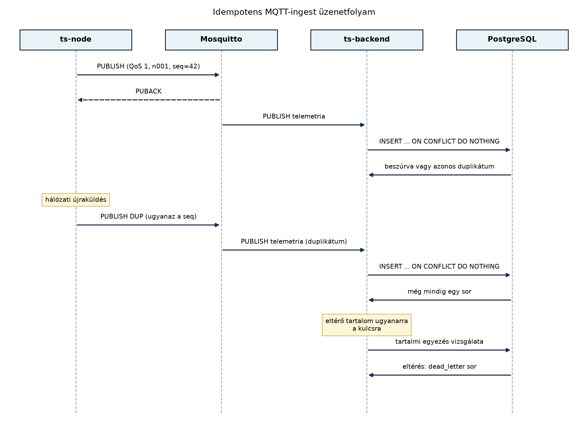

A TerraSense rendszerben a telemetria a
terrasense/<site>/<node>/telemetry topicra
érkezik, és a MQTT QoS, munkamenetek, retain, Last
Will és MQTT 5 alfejezetben meghatározott konvenció szerint QoS 1-es
publikálással utazik. A QoS 1 garantálja, hogy az üzenet legalább
egyszer megérkezik a brokerhez, de a hálózati hibák utáni újraküldés
miatt ugyanazt az üzenetet többször is kézbesítheti. Ha a backend minden
egyes érkezést új sorként ír az adatbázisba, a duplikátumok torzítják az
átlagot, a riasztási szabályokat és a későbbi idősoros elemzést. Ebben
az alfejezetben megépítjük a ts-backend MQTT-ingest komponensét, amely a
kanonikus sémát és a korábbi lapos formátumot is értelmezi, ellenőrzi a
topic és a payload azonosságát, és a
(site, node_id, boot_id, seq) eseménykulcs segítségével
idempotensen dolgozza fel az üzeneteket.
Definíció. (Idempotens feldolgozás) Egy feldolgozási lépés akkor idempotens, ha ugyanazt a bemeneti üzenetet többször végrehajtva ugyanazt a külső hatást érjük el, mint egyszeri végrehajtáskor. MQTT-ingest esetén ez azt jelenti, hogy a duplikált telemetriaüzenet nem hoz létre új adatsort, és nem vált ki többszörös riasztást vagy más mellékhatást.
Definíció. (Shared subscription) Az MQTT 5 shared
subscription egy broker-szolgáltatás, amely lehetővé teszi, hogy egy
topicüzenetet egy feliratkozási csoport több kliense közül csak egy
kapjon meg. A szintaxis:
$share/<csoportnév>/<topic>. Ha például két
ts-backend példány fut, mindkettő a
$share/ingest/terrasense/+/+/telemetry topicra iratkozik
fel, és a Mosquitto egy-egy üzenetet csak az egyiküknek továbbít. Ezzel
elkerülhető a párhuzamos példányok közötti duplikált feldolgozás
anélkül, hogy közös állapotot kellene fenntartaniuk.
Definíció. (Dead letter) A dead letter olyan tároló (tipikusan topic vagy adatbázistábla), ahová azok az üzenetek kerülnek, amelyeket a rendszer nem tud értelmezni vagy feldolgozni. Az ingest-komponensben ez az érvénytelen JSON-üzenetek és a tartalmilag ütköző események célhelye, hogy az üzemeltető később kivizsgálhassa őket anélkül, hogy a hibás üzenet blokkolná a teljes adatcsatornát.
Definíció. (Kanonikus eseménykulcs) A TerraSense
telemetria idempotencia-kulcsa a
(site, node_id, boot_id, seq) négyes. A site
és a node_id a topicból származó identitás, a
boot_id az eszköz adott bootolási ciklusát azonosítja, a
seq pedig az adott booton belül monoton növekvő sorszám. A
boot_id hiányában a boot-0 alapértéket
használjuk; így a régi, bootazonosítót nem küldő eszközök eseményei is
egyértelműen kulcsolhatók.
Definíció. (Retry spool) A retry spool egy tartós, helyi fájlpuffer, amely azokat az üzeneteket őrzi meg, amelyeket átmeneti infrastruktúrahiba (például adatbázis-leállás) miatt nem sikerült feldolgozni. A spool a hálózati vagy adatbázis-helyreállítás után újrapróbálja az üzeneteket, így azok nem vesznek el pusztán azért, mert a feldolgozó háttértár átmenetileg nem elérhető. A spool csak a tartós adatvesztés elleni védelem; nem helyettesíti a DLQ-t, amely a véglegesen feldolgozhatatlan vagy tartalmilag ütköző üzeneteké.
Az ingest adatútja a következő:

A fenti diagramon a ts-node QoS 1-es üzenetet küld, amelyet a
Mosquitto PUBACK-kel nyugtáz. Ha a PUBACK elveszik, a kliens újraküldi
ugyanazt az üzenetet; a hálózati duplikátum ismét eljut a backendhez. A
backend mindkét esetben ugyanazt az
INSERT ... ON CONFLICT DO NOTHING utasítást futtatja. Ha a
meglévő sor tartalma azonos, a művelet csendben visszatér; ha a tartalom
eltér, a backend nem írja felül az első beérkezést, hanem a
dead_letter táblába menti az ütközést.
Az MQTT-kliens kiválasztásakor a Spring világban két tipikus út van: az Eclipse Paho Java kliens közvetlen használata, vagy a Spring Integration MQTT-adaptere. A TerraSense oktatási céljaihoz a Paho Java kliens mellett döntünk, mert:
messageArrived metódusban elérhető
MqttMessage-et);A választás kompromisszumait az alábbi táblázat foglalja össze.
| Szempont | Paho Java kliens | Spring Integration MQTT |
|---|---|---|
| MQTT 5 támogatás | közvetlen, verziófüggő | újabb verziókban, absztrakció mögött |
| Tanulási átláthatóság | magas | közepes |
| Rugalmasság (callback, manuális ack) | teljes | korlátozott |
| Konfigurációs kód | explicit | deklaratív |
| TerraSense-ben | választott | nem használt |
A shared subscription használatáról akkor érdemes dönteni, ha a
ts-backend több példányban fut. Egy példány esetén a normál
terrasense/+/+/telemetry feliratkozás elegendő, és a
topic-wildcard biztosítja, hogy minden üzenet eljusson az ingesthez.
Több példánynál a $share/ingest/terrasense/+/+/telemetry
használata megakadályozza, hogy ugyanazt az üzenetet mindegyik példány
feldolgozza – azonban az idempotens adatmodell így is védőhálót ad, mert
ha valamelyik példány mégis kétszer kapná az üzenetet, az
ON CONFLICT DO NOTHING akkor sem hoz létre duplikátumot.
Több példány esetén a kliensazonosítónak példányonként egyedinek kell
lennie (például ts-backend-ingest-1,
ts-backend-ingest-2), különben az MQTT 5 munkamenet-átvétel
miatt a broker folyamatosan lecsatlakoztatja az egyik klienst.
A validálás során a backend a Sémák és verziózás:
kompatibilis változtatások alfejezetben rögzített elvet követi: a
sémaverziót az üzenet hordozza (schema_version mező). A
TerraSense kanonikus, 1-es verziójú üzenete a Adatmodell: eszköz, telemetria, telemetriai séma
alfejezet szerinti measurements objektumot tartalmazza; a
Backend és gateway közötti adatszerződés
alfejezetben bemutatott korábbi, lapos
temperature_c/humidity_rh/soil_moisture_pct
mezőket a backend 0-es verziójú, dokumentált adapterrel fogadja el. Az
ismeretlen mezők nem okoznak deszerializációs hibát, de a kanonikus
payloadot a repository normalizálja, így a tárolt JSON szerkezete
egységes. Az érvénytelen üzeneteket a dead_letter táblába
írjuk. A terrasense/ingest/dead-letter MQTT topicra történő
tükrözés lehetséges üzemeltetési kiegészítés, de ezt a labor nem építi
meg; a labor DLQ-ja az adatbázistábla.
Munkakönyvtár: ~/iot-labor/i044
mkdir -p ~/iot-labor/i044 && cd ~/iot-labor/i044
cp -r ~/iot-labor/i043 ./ts-backend
cd ts-backendA A ts-backend váza: REST API és
egészségellenőrzés alfejezetben a Maven-projekt gyökere közvetlenül
~/iot-labor/i043, ezért a teljes könyvtárat másoljuk
ts-backend néven. Így a pom.xml, a
Dockerfile és a src/ a várt
~/iot-labor/i044/ts-backend/ alá kerül, és a későbbi
Compose build context ../i044/ts-backend lehet.
Előfeltétel: a közös
~/iot-labor/stack/compose.yaml-ben futó Mosquitto
(lab-broker) és TimescaleDB (lab-timescaledb)
szolgáltatás. A 14.3-ban a Compose csak a brokert tartalmazta; most
adjuk hozzá az adatbázist, a backendet és a broker perzisztens kötetét.
A compose.yaml releváns részlete:
services:
lab-timescaledb:
image: timescale/timescaledb:2.17.2-pg16
container_name: lab-timescaledb
environment:
POSTGRES_DB: terrasense
POSTGRES_USER: terra
POSTGRES_PASSWORD: lab-password
ports:
- "5432:5432"
volumes:
- lab-timescaledb-data:/var/lib/postgresql/data
healthcheck:
test: ["CMD-SHELL", "pg_isready -U terra -d terrasense"]
interval: 5s
timeout: 3s
retries: 20
ts-backend:
build: ../i044/ts-backend
container_name: ts-backend
ports:
- "8080:8080"
environment:
MQTT_BROKER_URI: tcp://lab-broker:1883
SPRING_DATASOURCE_URL: jdbc:postgresql://lab-timescaledb:5432/terrasense
SPRING_DATASOURCE_USERNAME: terra
SPRING_DATASOURCE_PASSWORD: lab-password
INGEST_SPOOL_PATH: /app/spool/ingest-retry.jsonl
depends_on:
lab-broker:
condition: service_healthy
lab-timescaledb:
condition: service_healthy
volumes:
lab-timescaledb-data:
name: lab-timescaledb-data
lab-broker-data:
name: lab-broker-dataA meglévő lab-broker szolgáltatás volumes
listájához vegyük fel a perzisztens adatkönyvtárat:
volumes:
- ./mosquitto/mosquitto.conf:/mosquitto/config/mosquitto.conf:ro
- lab-broker-data:/mosquitto/dataA Mosquitto konfigurációjába pedig kerüljön be a perzisztencia, hogy a broker újraindítása után a QoS 1-es munkamenet és a várakozó üzenetek megmaradjanak:
cat >> ~/iot-labor/stack/mosquitto/mosquitto.conf <<'EOF'
persistence true
persistence_location /mosquitto/data/
autosave_interval 30
EOFA labor indítása:
docker compose -f ~/iot-labor/stack/compose.yaml up -d lab-timescaledb lab-broker1. A Maven-projekt és a függőségek. A 14.3-ban
létrehozott pom.xml szülőverzióját a könyv rögzített
verzióprofja szerint 3.3.4-re állítjuk, majd kiegészítjük a JDBC-,
PostgreSQL-, Lombok- és Paho-függőségekkel. A teljes, működő
pom.xml:
<?xml version="1.0" encoding="UTF-8"?>
<project xmlns="http://maven.apache.org/POM/4.0.0"
xmlns:xsi="http://www.w3.org/2001/XMLSchema-instance"
xsi:schemaLocation="http://maven.apache.org/POM/4.0.0
https://maven.apache.org/xsd/maven-4.0.0.xsd">
<modelVersion>4.0.0</modelVersion>
<parent>
<groupId>org.springframework.boot</groupId>
<artifactId>spring-boot-starter-parent</artifactId>
<version>3.3.4</version>
<relativePath/>
</parent>
<groupId>com.terrasense</groupId>
<artifactId>ts-backend</artifactId>
<version>0.1.0</version>
<name>ts-backend</name>
<description>TerraSense backend</description>
<properties>
<java.version>21</java.version>
<paho.version>1.2.5</paho.version>
</properties>
<dependencies>
<dependency>
<groupId>org.springframework.boot</groupId>
<artifactId>spring-boot-starter-web</artifactId>
</dependency>
<dependency>
<groupId>org.springframework.boot</groupId>
<artifactId>spring-boot-starter-actuator</artifactId>
</dependency>
<dependency>
<groupId>org.springframework.boot</groupId>
<artifactId>spring-boot-starter-jdbc</artifactId>
</dependency>
<dependency>
<groupId>org.postgresql</groupId>
<artifactId>postgresql</artifactId>
<scope>runtime</scope>
</dependency>
<dependency>
<groupId>org.eclipse.paho</groupId>
<artifactId>org.eclipse.paho.mqttv5.client</artifactId>
<version>${paho.version}</version>
</dependency>
<dependency>
<groupId>org.projectlombok</groupId>
<artifactId>lombok</artifactId>
<optional>true</optional>
</dependency>
</dependencies>
<build>
<plugins>
<plugin>
<groupId>org.springframework.boot</groupId>
<artifactId>spring-boot-maven-plugin</artifactId>
<configuration>
<excludes>
<exclude>
<groupId>org.projectlombok</groupId>
<artifactId>lombok</artifactId>
</exclude>
</excludes>
</configuration>
</plugin>
<plugin>
<groupId>org.apache.maven.plugins</groupId>
<artifactId>maven-compiler-plugin</artifactId>
<configuration>
<annotationProcessorPaths>
<path>
<groupId>org.projectlombok</groupId>
<artifactId>lombok</artifactId>
<version>${lombok.version}</version>
</path>
</annotationProcessorPaths>
</configuration>
</plugin>
</plugins>
</build>
</project>A spring-boot-starter-jdbc hozza a
JdbcTemplate-et és a HikariCP kapcsolatkészletet, a
postgresql driver runtime hatókörben van, a Lombok pedig
fordításidejű annotációfeldolgozó. A Spring Boot szülő a Lombok
verzióját a ${lombok.version} tulajdonságon keresztül
kezeli; a maven-compiler-plugin
annotationProcessorPaths bejegyzése nélkül a
@Slf4j a friss Maven-cache mellett fordítási hibát
adhat.
A labor végén a projektfa a következő (a 14.3-ból származó vezérlő, modell és memóriabeli service megmarad):
ts-backend/
├── pom.xml
├── Dockerfile
└── src/main/
├── java/com/terrasense/backend/
│ ├── TsBackendApplication.java
│ ├── controller/DeviceController.java
│ ├── model/Telemetry.java
│ ├── service/InMemoryDeviceService.java
│ ├── TelemetryMessage.java
│ ├── Measurement.java
│ ├── TelemetryIngestService.java
│ ├── TelemetryRepository.java
│ ├── IngestRetrySpool.java
│ └── SchedulingConfig.java
└── resources/
├── application.yaml
└── schema.sql2. Telemetria DTO a kanonikus és a régi formátumhoz.
A
src/main/java/com/terrasense/backend/TelemetryMessage.java
és a mellette lévő Measurement.java:
package com.terrasense.backend;
import com.fasterxml.jackson.annotation.JsonIgnoreProperties;
import java.util.LinkedHashMap;
import java.util.Map;
@JsonIgnoreProperties(ignoreUnknown = true)
public record TelemetryMessage(
Integer schema_version,
String node_id,
Long seq,
Long ts,
String site,
String boot_id,
Map<String, Measurement> measurements,
Double temperature_c,
Double humidity_rh,
Double soil_moisture_pct
) {
public static final int CANONICAL_SCHEMA_VERSION = 1;
public int effectiveSchemaVersion() {
if (schema_version != null) {
return schema_version;
}
return isLegacyFlat() ? 0 : -1;
}
public String effectiveBootId() {
return (boot_id == null || boot_id.isBlank()) ? "boot-0" : boot_id;
}
public boolean isLegacyFlat() {
return (measurements == null || measurements.isEmpty())
&& (temperature_c != null || humidity_rh != null || soil_moisture_pct != null);
}
public Map<String, Measurement> normalizedMeasurements() {
if (measurements != null && !measurements.isEmpty()) {
return measurements;
}
Map<String, Measurement> legacy = new LinkedHashMap<>();
if (temperature_c != null) {
legacy.put("temperature", new Measurement(temperature_c, "Cel", true, null));
}
if (humidity_rh != null) {
legacy.put("humidity", new Measurement(humidity_rh, "%RH", true, null));
}
if (soil_moisture_pct != null) {
legacy.put("soil_moisture", new Measurement(soil_moisture_pct, "%", true, null));
}
return legacy;
}
}package com.terrasense.backend;
import com.fasterxml.jackson.annotation.JsonIgnoreProperties;
@JsonIgnoreProperties(ignoreUnknown = true)
public record Measurement(Double value, String unit, Boolean valid, String reason) {}A mezők Integer, Long és
Double típusúak, nem primitívek: így a hiányzó
schema_version, seq vagy mérési érték
null marad, és a validáció észleli, nem pedig csendben
0-ra konvertálódik. A normalizedMeasurements()
a 0-es verziójú lapos üzenetet alakítja át a kanonikus mérési
objektummá; az 1-es verziójú üzenetet változatlanul adja tovább.
3. Ingest szolgáltatás MQTT 5 munkamenettel, validációval és
retry spool-lal. A
src/main/java/com/terrasense/backend/TelemetryIngestService.java:
package com.terrasense.backend;
import com.fasterxml.jackson.core.JsonProcessingException;
import com.fasterxml.jackson.databind.ObjectMapper;
import jakarta.annotation.PostConstruct;
import jakarta.annotation.PreDestroy;
import java.nio.charset.StandardCharsets;
import java.util.Map;
import java.util.regex.Matcher;
import java.util.regex.Pattern;
import lombok.extern.slf4j.Slf4j;
import org.eclipse.paho.mqttv5.client.IMqttToken;
import org.eclipse.paho.mqttv5.client.MqttCallback;
import org.eclipse.paho.mqttv5.client.MqttClient;
import org.eclipse.paho.mqttv5.client.MqttConnectionOptions;
import org.eclipse.paho.mqttv5.client.MqttDisconnectResponse;
import org.eclipse.paho.mqttv5.common.MqttException;
import org.eclipse.paho.mqttv5.common.MqttMessage;
import org.eclipse.paho.mqttv5.common.packet.MqttProperties;
import org.springframework.beans.factory.annotation.Value;
import org.springframework.dao.DataAccessException;
import org.springframework.scheduling.annotation.Scheduled;
import org.springframework.stereotype.Service;
@Slf4j
@Service
public class TelemetryIngestService {
private static final int MAX_SPOOL_ATTEMPTS = 60;
private static final Pattern TOPIC_PATTERN =
Pattern.compile("^terrasense/([^/]+)/([^/]+)/telemetry$");
private final TelemetryRepository repository;
private final ObjectMapper objectMapper;
private final IngestRetrySpool retrySpool;
private final String brokerUri;
private final String clientId;
private final String topicFilter;
private MqttClient client;
private MqttConnectionOptions options;
public TelemetryIngestService(
TelemetryRepository repository,
ObjectMapper objectMapper,
IngestRetrySpool retrySpool,
@Value("${ingest.broker-uri}") String brokerUri,
@Value("${ingest.client-id}") String clientId,
@Value("${ingest.topic-filter}") String topicFilter) {
this.repository = repository;
this.objectMapper = objectMapper;
this.retrySpool = retrySpool;
this.brokerUri = brokerUri;
this.clientId = clientId;
this.topicFilter = topicFilter;
}
@PostConstruct
public void start() throws MqttException {
client = new MqttClient(brokerUri, clientId);
options = new MqttConnectionOptions();
options.setAutomaticReconnect(true);
options.setCleanStart(false);
options.setSessionExpiryInterval(3600L);
client.setCallback(new MqttCallback() {
@Override
public void disconnected(MqttDisconnectResponse response) {
log.warn("MQTT kapcsolat megszakadt: {}", response.getException());
}
@Override
public void mqttErrorOccurred(MqttException exception) {
log.warn("MQTT hiba: {}", exception.getMessage());
}
@Override
public void messageArrived(String topic, MqttMessage message) {
handleMessage(topic, message);
}
@Override
public void deliveryComplete(IMqttToken token) {
// QoS 1 kimenő üzenet nyugtázva; az ingest csak bejövő üzeneteket dolgoz fel.
}
@Override
public void connectComplete(boolean reconnect, String serverURI) {
log.info("MQTT kapcsolat kész: reconnect={}, broker={}", reconnect, serverURI);
try {
subscribe();
} catch (MqttException e) {
log.error("Az újrafeliratkozás sikertelen", e);
}
}
@Override
public void authPacketArrived(int reasonCode, MqttProperties properties) {
// A labor broker anonymous kapcsolatot enged; hitelesítésnél itt dolgozható fel a válasz.
}
});
client.connect(options);
subscribe();
}
private void subscribe() throws MqttException {
client.subscribe(topicFilter, 1, this::handleMessage);
log.info("Feliratkozva: {}", topicFilter);
}
private void handleMessage(String topic, MqttMessage message) {
String payload = new String(message.getPayload(), StandardCharsets.UTF_8);
try {
process(topic, payload);
} catch (DataAccessException e) {
spoolOrLog(topic, payload, e);
} catch (RuntimeException e) {
spoolOrLog(topic, payload, e);
}
}
private void process(String topic, String payload) {
Matcher matcher = TOPIC_PATTERN.matcher(topic);
if (!matcher.matches()) {
repository.insertDeadLetter(topic, payload, "váratlan topic");
log.warn("Váratlan topic: {}", topic);
return;
}
String site = matcher.group(1);
String topicNode = matcher.group(2);
TelemetryMessage telemetry;
try {
telemetry = objectMapper.readValue(payload, TelemetryMessage.class);
} catch (JsonProcessingException e) {
repository.insertDeadLetter(topic, payload, "érvénytelen JSON: " + e.getOriginalMessage());
log.warn("Érvénytelen JSON a {} topicon", topic);
return;
}
String validationError = validate(site, topicNode, telemetry);
if (validationError != null) {
repository.insertDeadLetter(topic, payload, validationError);
log.warn("Érvénytelen telemetria ({}): {}", validationError, payload);
return;
}
IngestOutcome outcome = repository.insertIfAbsent(site, telemetry, topic);
if (outcome == IngestOutcome.CONTENT_MISMATCH) {
log.error("Eltérő tartalom ugyanarra az eseménykulcsra: site={}, node={}, seq={}",
site, telemetry.node_id(), telemetry.seq());
} else if (outcome == IngestOutcome.DUPLICATE) {
log.debug("Azonos duplikátum: site={}, node={}, seq={}",
site, telemetry.node_id(), telemetry.seq());
} else {
log.info("Ingest OK: site={}, node={}, seq={}", site, telemetry.node_id(), telemetry.seq());
}
}
private String validate(String site, String topicNode, TelemetryMessage m) {
int version = m.effectiveSchemaVersion();
if (version != 0 && version != TelemetryMessage.CANONICAL_SCHEMA_VERSION) {
return "nem támogatott schema_version: " + m.schema_version();
}
if (m.node_id() == null || m.node_id().isBlank()) {
return "hiányzó node_id";
}
if (m.seq() == null || m.seq() < 0) {
return "hiányzó vagy negatív seq";
}
if (m.ts() == null || m.ts() < 1_600_000_000_000L || m.ts() > 4_000_000_000_000L) {
return "érvénytelen ts";
}
if (!m.node_id().equals(topicNode)) {
return "a topic node azonosítója eltér a payloadétól";
}
if (m.site() != null && !m.site().isBlank() && !m.site().equals(site)) {
return "a payload site mezője eltér a topictól";
}
if (version == 0 && m.measurements() != null && !m.measurements().isEmpty()) {
return "schema_version=0 mellett measurements nem lehet jelen";
}
if (version == 0 && !m.isLegacyFlat()) {
return "schema_version=0 mellett hiányoznak a lapos mérési mezők";
}
if (version == 1 && (m.measurements() == null || m.measurements().isEmpty())) {
return "schema_version=1 mellett hiányzó measurements";
}
Map<String, Measurement> measurements = m.normalizedMeasurements();
if (measurements.isEmpty()) {
return "nincs mérési adat";
}
for (Map.Entry<String, Measurement> entry : measurements.entrySet()) {
if (entry.getKey() == null || entry.getKey().isBlank()) {
return "üres méréstípus";
}
Measurement value = entry.getValue();
if (value == null || value.value() == null) {
return "hiányzó mérési érték: " + entry.getKey();
}
if (version == 1) {
if (value.unit() == null || value.unit().isBlank()) {
return "hiányzó mértékegység: " + entry.getKey();
}
if (value.valid() == null) {
return "hiányzó valid jelző: " + entry.getKey();
}
if (!value.valid() && (value.reason() == null || value.reason().isBlank())) {
return "érvénytelen mérés indoklás nélkül: " + entry.getKey();
}
}
}
return null;
}
private void spoolOrLog(String topic, String payload, Exception cause) {
try {
retrySpool.append(topic, payload);
log.error("Átmeneti hiba; az üzenet a retry-spoolba került", cause);
} catch (RuntimeException spoolError) {
log.error("KRITIKUS: az üzenet sem az adatbázisba, sem a spoolba nem került: {}",
payload, spoolError);
}
}
@Scheduled(fixedDelay = 5000)
public void drainRetrySpool() {
for (IngestRetrySpool.SpooledMessage spooled : retrySpool.readAll()) {
try {
process(spooled.topic(), spooled.payload());
retrySpool.remove(spooled);
} catch (DataAccessException e) {
if (spooled.attempts() + 1 >= MAX_SPOOL_ATTEMPTS) {
moveSpooledToDeadLetter(spooled, e);
} else {
retrySpool.replace(spooled, spooled.nextAttempt());
}
return;
} catch (RuntimeException e) {
try {
repository.insertDeadLetter(spooled.topic(), spooled.payload(),
"feldolgozási hiba: " + e.getClass().getSimpleName());
} catch (DataAccessException dlqError) {
log.error("A spool-bejegyzés DLQ-ba mozgatása sem sikerült", dlqError);
return;
}
retrySpool.remove(spooled);
}
}
}
private void moveSpooledToDeadLetter(IngestRetrySpool.SpooledMessage spooled, Exception cause) {
try {
repository.insertDeadLetter(spooled.topic(), spooled.payload(),
"tartós infrastruktúrahiba " + MAX_SPOOL_ATTEMPTS + " kísérlet után");
retrySpool.remove(spooled);
log.error("A spool-bejegyzés a DLQ-ba került {} kísérlet után", MAX_SPOOL_ATTEMPTS, cause);
} catch (DataAccessException e) {
log.error("A DLQ sem írható; a spool-bejegyzés megmarad", e);
}
}
@PreDestroy
public void stop() throws MqttException {
if (client != null) {
try {
if (client.isConnected()) {
client.disconnect();
}
} finally {
client.close();
}
}
}
}A munkamenet-stratégia lényege: cleanStart=false és
sessionExpiryInterval=3600 esetén a broker a kliens
átmeneti kiesése alatt is fenntartja a feliratkozást és a QoS 1-es
várakozó üzeneteket; a connectComplete callback minden
újracsatlakozás után újra feliratkozik, így a feliratkozás nem csak az
első connect után jön létre. A clientId-nak
stabilnak kell lennie, különben a broker nem találja a korábbi
munkamenetet. A perzisztens broker beállítás (a fenti
persistence true) nélkül a broker újraindítása elveszítheti
a munkamenetet és a várakozó üzeneteket.
A hibakezelés szétválasztja az adat- és az infrastruktúrahibákat. Az
érvénytelen JSON, a hiányzó kötelező mező, a topic–payload eltérés és a
tartalmi ütközés adathiba: azonnal a dead_letter táblába
kerül, és nem blokkolja a csatornát. Az adatbázis-kivétel
(DataAccessException) infrastruktúrahiba: az üzenet a helyi
spoolba kerül, és a háttérben öt másodpercenként újrapróbáljuk. A
kísérletszám a spool-bejegyzésben tárolódik; 60 sikertelen kísérlet után
a bejegyzés a DLQ-ba kerül, hogy az üzemeltető kézzel visszajátszhassa.
A rövid adatbázis-leállás így nem veszít adatot, a hosszú leállás pedig
nem okoz végtelen újrapróbálkozást.
4. Retry spool. A
src/main/java/com/terrasense/backend/IngestRetrySpool.java
egy soronkénti JSON-fájlt ír, amely a topicot, a nyers payloadot és a
kísérletszámot tartalmazza:
package com.terrasense.backend;
import com.fasterxml.jackson.databind.ObjectMapper;
import java.io.IOException;
import java.nio.charset.StandardCharsets;
import java.nio.file.Files;
import java.nio.file.Path;
import java.nio.file.StandardCopyOption;
import java.nio.file.StandardOpenOption;
import java.util.ArrayList;
import java.util.List;
import org.springframework.beans.factory.annotation.Value;
import org.springframework.stereotype.Component;
@Component
public class IngestRetrySpool {
public record SpooledMessage(String topic, String payload, int attempts) {
public SpooledMessage nextAttempt() {
return new SpooledMessage(topic, payload, attempts + 1);
}
}
private final Path path;
private final ObjectMapper objectMapper;
public IngestRetrySpool(
ObjectMapper objectMapper,
@Value("${ingest.spool-path:spool/ingest-retry.jsonl}") String spoolPath) {
this.objectMapper = objectMapper;
this.path = Path.of(spoolPath);
}
public synchronized void append(String topic, String payload) {
try {
Files.createDirectories(path.toAbsolutePath().getParent());
String line = objectMapper.writeValueAsString(
new SpooledMessage(topic, payload, 0)) + System.lineSeparator();
Files.writeString(path, line, StandardCharsets.UTF_8,
StandardOpenOption.CREATE, StandardOpenOption.APPEND);
} catch (IOException e) {
throw new IllegalStateException("A retry-spool nem írható: " + path, e);
}
}
public synchronized List<SpooledMessage> readAll() {
if (!Files.exists(path)) {
return List.of();
}
try {
List<SpooledMessage> result = new ArrayList<>();
for (String line : Files.readAllLines(path, StandardCharsets.UTF_8)) {
if (!line.isBlank()) {
result.add(objectMapper.readValue(line, SpooledMessage.class));
}
}
return result;
} catch (IOException e) {
throw new IllegalStateException("A retry-spool nem olvasható: " + path, e);
}
}
public synchronized void replace(SpooledMessage oldMessage, SpooledMessage newMessage) {
rewrite(line -> line.equals(oldMessage) ? newMessage : null);
}
public synchronized void remove(SpooledMessage message) {
rewrite(line -> line.equals(message) ? null : line);
}
private void rewrite(java.util.function.UnaryOperator<SpooledMessage> mapping) {
if (!Files.exists(path)) {
return;
}
try {
List<String> remaining = new ArrayList<>();
for (String line : Files.readAllLines(path, StandardCharsets.UTF_8)) {
if (line.isBlank()) {
continue;
}
SpooledMessage current = objectMapper.readValue(line, SpooledMessage.class);
SpooledMessage mapped = mapping.apply(current);
if (mapped != null) {
remaining.add(objectMapper.writeValueAsString(mapped));
}
}
Path temporary = path.resolveSibling(path.getFileName() + ".tmp");
Files.write(temporary, remaining, StandardCharsets.UTF_8);
Files.move(temporary, path,
StandardCopyOption.REPLACE_EXISTING, StandardCopyOption.ATOMIC_MOVE);
} catch (IOException e) {
throw new IllegalStateException("A retry-spool nem írható: " + path, e);
}
}
}A spool írása és törlése egy ideiglenes fájlon keresztül, atomikus
Files.move művelettel történik, így áramszünet esetén nem
marad félig írt sor. A spool csak az átmeneti hibákat őrzi; az adathibák
továbbra is a DLQ-ba mennek. A spool fájlját a Compose-ban a backend
konténer /app/spool kötetére érdemes tenni, különben a
konténer újraépítésekor elveszhet; a laborban a
INGEST_SPOOL_PATH erre a kötetre mutat.
5. Repository az idempotens beszúrással. A
src/main/java/com/terrasense/backend/TelemetryRepository.java:
package com.terrasense.backend;
import com.fasterxml.jackson.core.JsonProcessingException;
import com.fasterxml.jackson.databind.ObjectMapper;
import java.util.LinkedHashMap;
import java.util.Map;
import org.springframework.jdbc.core.JdbcTemplate;
import org.springframework.stereotype.Repository;
import org.springframework.transaction.annotation.Transactional;
@Repository
public class TelemetryRepository {
public enum IngestOutcome {
INSERTED, DUPLICATE, CONTENT_MISMATCH
}
private final JdbcTemplate jdbc;
private final ObjectMapper objectMapper;
public TelemetryRepository(JdbcTemplate jdbc, ObjectMapper objectMapper) {
this.jdbc = jdbc;
this.objectMapper = objectMapper;
}
@Transactional
public IngestOutcome insertIfAbsent(String site, TelemetryMessage message, String topic) {
String canonicalJson = canonicalJson(message);
int inserted = jdbc.update("""
INSERT INTO telemetry
(site, node_id, boot_id, seq, received_at, ts, schema_version, payload)
VALUES (?, ?, ?, ?, NOW(), ?, ?, ?::jsonb)
ON CONFLICT (site, node_id, boot_id, seq) DO NOTHING
""",
site,
message.node_id(),
message.effectiveBootId(),
message.seq(),
message.ts(),
message.effectiveSchemaVersion(),
canonicalJson);
if (inserted == 0) {
Boolean same = jdbc.queryForObject("""
SELECT (payload = ?::jsonb AND ts = ? AND schema_version = ?)
FROM telemetry
WHERE site = ? AND node_id = ? AND boot_id = ? AND seq = ?
""",
Boolean.class,
canonicalJson,
message.ts(),
message.effectiveSchemaVersion(),
site,
message.node_id(),
message.effectiveBootId(),
message.seq());
if (Boolean.TRUE.equals(same)) {
return IngestOutcome.DUPLICATE;
}
insertDeadLetter(topic, canonicalJson,
"eltérő tartalom ugyanarra az eseménykulcsra");
return IngestOutcome.CONTENT_MISMATCH;
}
return IngestOutcome.INSERTED;
}
public void insertDeadLetter(String topic, String payload, String reason) {
jdbc.update("""
INSERT INTO dead_letter (topic, payload, reason, received_at)
VALUES (?, ?, ?, NOW())
""", topic, payload, reason);
}
private String canonicalJson(TelemetryMessage message) {
Map<String, Object> canonical = new LinkedHashMap<>();
canonical.put("schema_version", message.effectiveSchemaVersion());
canonical.put("node_id", message.node_id());
canonical.put("seq", message.seq());
canonical.put("ts", message.ts());
canonical.put("boot_id", message.effectiveBootId());
canonical.put("measurements", message.normalizedMeasurements());
try {
return objectMapper.writeValueAsString(canonical);
} catch (JsonProcessingException e) {
throw new IllegalStateException("A kanonikus payload nem szerializálható", e);
}
}
}Az ON CONFLICT ... DO NOTHING nem módosítja a már
meglévő sor received_at, ts,
schema_version vagy payload értékét: az első
beérkezés változatlan marad. A tartalmi egyezést a JSONB =
operátorával ellenőrizzük, amely a JSON-objektumoknál a szemantikus
egyezést vizsgálja, nem a szöveges formázást. Ha a kulcs ütközik, de a
tartalom eltér, az esemény nem írja felül az előzményt; a repository
ugyanabban a tranzakcióban a dead_letter táblába menti a
kanonikus payloadot. A @Transactional gondoskodik arról,
hogy az esemény beszúrása és az esetleges DLQ-bejegyzés együtt
sikerüljön vagy együtt hiúsuljon meg.
A schema.sql a src/main/resources/ alatt
hozza létre a fogadótáblát és a DLQ-t:
CREATE TABLE IF NOT EXISTS telemetry (
site TEXT NOT NULL,
node_id TEXT NOT NULL,
boot_id TEXT NOT NULL DEFAULT 'boot-0',
seq BIGINT NOT NULL,
received_at TIMESTAMPTZ NOT NULL DEFAULT NOW(),
ts BIGINT NOT NULL,
schema_version INT NOT NULL,
payload JSONB NOT NULL,
PRIMARY KEY (site, node_id, boot_id, seq)
);
CREATE TABLE IF NOT EXISTS dead_letter (
id BIGSERIAL PRIMARY KEY,
topic TEXT NOT NULL,
payload TEXT NOT NULL,
reason TEXT,
received_at TIMESTAMPTZ NOT NULL DEFAULT NOW()
);A telemetry tábla ebben az alfejezetben még a nyers
fogadóeseményeket tárolja. A Idősoros adatbázisok és
adatmodellezés alfejezet verziózott migrációval alakítja át hosszú
idősoros táblává, és a nyers eseménytáblát telemetry_ingest
néven megtartja az idempotencia és az audit számára.
Az application.yaml a környezeti változókat használja,
hogy ugyanaz az alkalmazáskód hostról és Compose-ból is működjön:
server:
port: 8080
spring:
application:
name: ts-backend
datasource:
url: ${SPRING_DATASOURCE_URL:jdbc:postgresql://localhost:5432/terrasense}
username: ${SPRING_DATASOURCE_USERNAME:terra}
password: ${SPRING_DATASOURCE_PASSWORD:lab-password}
driver-class-name: org.postgresql.Driver
sql:
init:
mode: always
schema-locations: classpath:schema.sql
ingest:
broker-uri: ${MQTT_BROKER_URI:tcp://localhost:1883}
client-id: ${MQTT_CLIENT_ID:ts-backend-ingest}
topic-filter: ${MQTT_TOPIC_FILTER:terrasense/+/+/telemetry}
spool-path: ${INGEST_SPOOL_PATH:spool/ingest-retry.jsonl}Hostról futtatva a localhost alapértékek érvényesek,
mert a Compose publikálja az 5432 és 1883 portokat; a
ts-backend konténerben a fenti Compose-környezeti változók
felülírják őket a lab-timescaledb, illetve
lab-broker szolgáltatásnévre. A
SPRING_DATASOURCE_* változók a Spring Boot relaxed
bindingja miatt közvetlenül a spring.datasource
property-ket állítják be.
6. Ütemezés engedélyezése. A
src/main/java/com/terrasense/backend/SchedulingConfig.java
kapcsolja be a @Scheduled feldolgozást:
package com.terrasense.backend;
import org.springframework.context.annotation.Configuration;
import org.springframework.scheduling.annotation.EnableScheduling;
@Configuration
@EnableScheduling
public class SchedulingConfig {}7. Build és futtatás.
cd ~/iot-labor/i044/ts-backend
mvn clean verify
mvn spring-boot:runHostról futtatva a lab-timescaledb és a
lab-broker szolgáltatásnak futnia kell. A konténeres
változat:
docker compose -f ~/iot-labor/stack/compose.yaml up -d --build ts-backendEgy másik terminálban kanonikus, 1-es verziójú tesztüzenet küldése QoS 1-gyel:
mosquitto_pub -h localhost -t terrasense/gh1/n001/telemetry -q 1 -m '{"schema_version":1,"node_id":"n001","seq":42,"ts":1710000000000,"boot_id":"b01","measurements":{"temperature":{"value":23.5,"unit":"Cel","valid":true},"humidity":{"value":55.0,"unit":"%RH","valid":true},"soil_moisture":{"value":30.0,"unit":"%","valid":true}}}'Várt kimenet a backend logjában (a naplózási szinttől függően a Spring Boot indítási sorai is megjelennek):
Feliratkozva: terrasense/+/+/telemetry
MQTT kapcsolat kész: reconnect=false, broker=tcp://localhost:1883
Ingest OK: site=gh1, node=n001, seq=42Duplikáció-teszt. Küldjük el ugyanezt a parancsot
még egyszer (a seq ugyanaz). A táblában továbbra is egy sor
van, és a received_at nem változik:
docker compose -f ~/iot-labor/stack/compose.yaml exec lab-timescaledb \
psql -U terra -d terrasense \
-c "SELECT count(*), min(received_at) FROM telemetry WHERE site='gh1' AND node_id='n001' AND seq=42;"Várt kimenet:
count | min
-------+------------------------
1 | 2026-10-31 10:00:00+00A pontos időbélyeg a futtatás idejétől függ; a lényeg, hogy a második
üzenet nem írja át az első received_at értékét.
Tartalmi ütközés tesztje. Ugyanarra a
(site, node_id, boot_id, seq) kulcsra küldjünk eltérő
értéket:
mosquitto_pub -h localhost -t terrasense/gh1/n001/telemetry -q 1 -m '{"schema_version":1,"node_id":"n001","seq":42,"ts":1710000000000,"boot_id":"b01","measurements":{"temperature":{"value":99.9,"unit":"Cel","valid":true}}}'A telemetry tábla egyetlen sora változatlan marad, a
dead_letter táblában pedig megjelenik az ütközés:
docker compose -f ~/iot-labor/stack/compose.yaml exec lab-timescaledb \
psql -U terra -d terrasense \
-c "SELECT topic, reason FROM dead_letter ORDER BY id DESC LIMIT 1;"Várt kimenet:
topic | reason
--------------------------------+-----------------------------------------------------
terrasense/gh1/n001/telemetry | eltérő tartalom ugyanarra az eseménykulcsraLegacy, 0-es verziójú üzenet tesztje. A Backend és gateway közötti adatszerződés alfejezet lapos formátuma adapterrel továbbra is beérkezik:
mosquitto_pub -h localhost -t terrasense/gh1/n001/telemetry -q 1 -m '{"node_id":"n001","seq":44,"ts":1710000300000,"temperature_c":22.8,"humidity_rh":61.2,"soil_moisture_pct":35.0}'A backend Ingest OK: site=gh1, node=n001, seq=44 sort
naplóz, a telemetry táblában pedig a
schema_version értéke 0, a payload
measurements objektuma pedig a lapos mezőkből képződik.
Topic–payload eltérés tesztje. Küldjünk
n002 payloadot az n001 topicra:
mosquitto_pub -h localhost -t terrasense/gh1/n001/telemetry -q 1 -m '{"schema_version":1,"node_id":"n002","seq":45,"ts":1710000600000,"measurements":{"temperature":{"value":21.0,"unit":"Cel","valid":true}}}'Az üzenet nem íródik az n001 eszközhöz; a DLQ-ban a
a topic node azonosítója eltér a payloadétól indok jelenik
meg.
Érvénytelen üzenet tesztje (hiányzó
node_id):
mosquitto_pub -h localhost -t terrasense/gh1/n002/telemetry -q 1 -m '{"schema_version":1,"seq":43}'A backend logban Érvénytelen telemetria, és a
dead_letter táblában egy sor jelenik meg.
Adatbázis-leállás tesztje. Állítsuk le az adatbázist, küldjünk egy üzenetet, majd indítsuk újra:
docker compose -f ~/iot-labor/stack/compose.yaml stop lab-timescaledb
mosquitto_pub -h localhost -t terrasense/gh1/n001/telemetry -q 1 -m '{"schema_version":1,"node_id":"n001","seq":46,"ts":1710000900000,"measurements":{"temperature":{"value":23.0,"unit":"Cel","valid":true}}}'
docker compose -f ~/iot-labor/stack/compose.yaml start lab-timescaledbA leállás alatt a backend naplójában
Átmeneti hiba; az üzenet a retry-spoolba került jelenik
meg, és a spool/ingest-retry.jsonl fájl tartalmazza a
seq=46 üzenetet. Az adatbázis visszatérése után legkésőbb
öt másodperccel a spool kiürül, és a telemetry táblában
megjelenik a seq=46 sor. Ez a viselkedés a labor elvárt
működése; a leállás és az újraindítás tényleges időzítését a környezet
határozza meg.
A labor működését a fenti duplikáció-, tartalmi ütközés-, legacy-, topic-eltérés-, érvénytelenüzenet- és adatbázis-leállás-teszttel ellenőrizzük. Gyakori hibák:
| Tünet | Lehetséges ok | Javítás |
|---|---|---|
| A backend nem csatlakozik a brokerhez | A Mosquitto nem fut a stackben, vagy a szolgáltatás neve nem
lab-broker |
docker compose -f ~/iot-labor/stack/compose.yaml up -d lab-broker;
ellenőrizd a docker ps kimenetét |
A terrasense/+/+/telemetry topicra nem érkezik
üzenet |
A publisher más topicra küld, vagy a backend topic-mintája hibás | Ellenőrizd a topic pontos nevét; a wildcard + pontosan
egy szintet helyettesít |
A duplikátumok mégis bekerülnek a telemetry
táblába |
A PRIMARY KEY (site, node_id, boot_id, seq) hiányzik,
vagy a schema.sql nem fut le |
Ellenőrizd a tábla definícióját: \d telemetry |
A dead_letter tábla üres érvénytelen üzenet után
is |
Az alkalmazás nem hívja az insertDeadLetter-t, vagy a
tranzakció hibát dob |
Nézd a backend logját; a validate metódus adott-e
vissza hibaszöveget |
A Paho kliens NoClassDefFoundError |
A Maven függőség hiányzik vagy rossz verzió | Ellenőrizd a pom.xml-t és a
mvn clean verify kimenetét |
A @Slf4j fordítási hiba |
A Lombok annotation processor konfigurációja hiányzik | Ellenőrizd a maven-compiler-plugin
annotationProcessorPaths bejegyzését |
| A backend a konténerből nem éri el az adatbázist | A localhost a konténer saját hálózatát jelenti |
Használd a
SPRING_DATASOURCE_URL=jdbc:postgresql://lab-timescaledb:5432/terrasense
környezeti változót |
| A spool nem ürül ki az adatbázis visszatérése után | Az ütemezés nincs engedélyezve, vagy a spool útvonala nem írható | Ellenőrizd a SchedulingConfig
@EnableScheduling annotációját és az
INGEST_SPOOL_PATH kötetét |
| Az újracsatlakozás után nem jönnek üzenetek | A clientId megváltozott, vagy a
cleanStart=true eldobta a munkamenetet |
Használj stabil clientId-t,
cleanStart=false és sessionExpiryInterval
beállítást |
INSERT
felesleges sorokat szül.received_at-et az adatbázis NOW()-val állítja,
ami a szerver időzónájától függhet. A TerraSense konvenció szerint
mindig UTC-t használunk; a TIMESTAMPTZ típus és a Postgres
UTC-re normalizálása ezt biztosítja, de az alkalmazásszintű
időbélyegzőknél ügyelni kell az Instant használatára.TelemetryIngestService
validate metódusát úgy, hogy a kanonikus
measurements objektumban csak számértékeket fogadjon el, a
temperature értéke −40 és 80 °C közé essen, és a
soil_moisture értéke 0 és 100% közé essen.telemetry táblában ugyanarra a
(site, node_id, boot_id, seq) kulcsra két sor van, de a
PRIMARY KEY definíció helyes. Hol lehet a hiba a
feldolgozási láncban?private String validateMeasurements(Map<String, Measurement> measurements) {
for (Map.Entry<String, Measurement> entry : measurements.entrySet()) {
Measurement value = entry.getValue();
if (value == null || value.value() == null) {
return "hiányzó mérési érték: " + entry.getKey();
}
double number = value.value();
if (entry.getKey().equals("temperature") && (number < -40.0 || number > 80.0)) {
return "tartományon kívüli temperature: " + number;
}
if (entry.getKey().equals("soil_moisture") && (number < 0.0 || number > 100.0)) {
return "tartományon kívüli soil_moisture: " + number;
}
}
return null;
}A metódust a validate a measurements
ellenőrzése után hívja meg, és az eredményt adja vissza.
site eltér a payload site
mezőjétől, a boot_id az egyik üzenetben hiányzik (és a
boot-0 alapértékre esik), vagy a seq a
JSON-ben karakterláncként érkezik, és a deszerializáció másképp
értelmezi. Ellenőrizd a tényleges értékeket:SELECT site, node_id, boot_id, seq, count(*)
FROM telemetry
GROUP BY 1, 2, 3, 4
HAVING count(*) > 1;A tartalmi eltérés önmagában nem hoz létre második sort: az
ON CONFLICT DO NOTHING a meglévő sort hagyja, és a DLQ-ba
ír.
A laborban elkészült a ts-backend MQTT-ingest komponense, amely Paho
MQTT 5 Java klienssel, tartós munkamenettel és újrafeliratkozással
figyeli a terrasense/+/+/telemetry topicot. A szolgáltatás
a kanonikus measurements objektumot és a 0-es verziójú
lapos formátumot is értelmezi, ellenőrzi a topic és a payload site/node
azonosságát, és a (site, node_id, boot_id, seq)
eseménykulccsal ON CONFLICT DO NOTHING művelettel
idempotensen dolgozza fel az üzeneteket. Az azonos duplikátum nem
változtat az első soron, a tartalmi ütközés a dead_letter
táblába kerül. Az átmeneti adatbázis-hibák a helyi retry spoolba jutnak,
ahonnan öt másodpercenként, legfeljebb 60 kísérletig újrapróbálhatók.
Továbbvitt eredmény. A
TelemetryRepository.insertIfAbsent metódus és a
telemetry tábla sémája az Idősoros
adatbázisok és adatmodellezés alfejezetben verziózott migrációval
hypertable-lé alakul, a Eseményvezérelt feldolgozás:
Kafka és a kézbesítési szemantika alfejezetben a Kafka-producer
tranzakciókban, a Záróprojekt: a teljes TerraSense
rendszer összeállítása és átvétele alfejezetben pedig a végpontok
közötti átvételi tesztekben használt idempotens ingest alapjaként
szolgál. A labor kimenete a ~/iot-labor/i044/ts-backend
projekt, benne a TelemetryIngestService.java,
TelemetryMessage.java, Measurement.java,
TelemetryRepository.java,
IngestRetrySpool.java, SchedulingConfig.java,
schema.sql és a módosított
application.yaml.
Session Expiry Interval) és
Clean Start: OASIS MQTT 5.0 szabvány, 3.1.2.11 és 4.1.
fejezet. A labor 3600 másodperces lejáratot használ; a termelési értéket
az üzemeltetési követelményekhez kell igazítani.org.eclipse.paho.mqttv5.client 1.2.5 artifactra épül; a
laborban a Maven-fordítás és a brokeres végigfuttatás a lektorálási
környezetben nem történt meg).spring.sql.init, JdbcTemplate
és környezeti változós konfiguráció: https://docs.spring.io/spring-boot/
(a példák a Spring Boot 3.3.4 dokumentációja alapján készültek; a teljes
mvn clean verify futtatása a lektorálási környezetben nem
történt meg).INSERT ... ON CONFLICT) és JSONB
egyenlőség: https://www.postgresql.org/docs/ (stabil funkció,
ellenőrizendő a pontos hivatkozás).pom.xml szülőverziója a könyv
rögzített verzióprofja szerint 3.3.4; ha a helyi projektben 3.4.1
szerepel, a labor első lépésében arra a verzióra kell állítani.